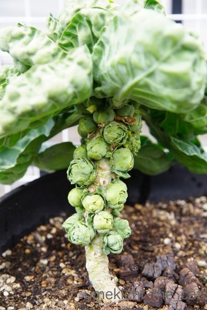
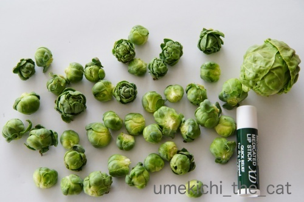
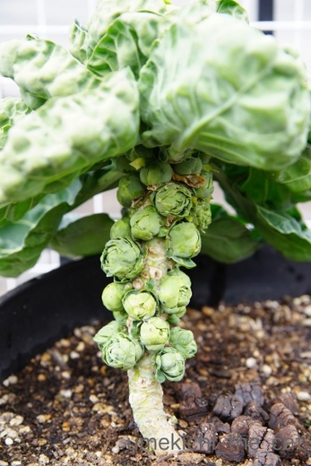
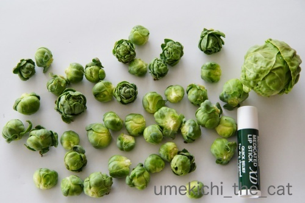

夕ご飯前はつるつる、ほりほり [梅吉]
ベランダのプランターに植えた芽キャベツ。記事を調べると植えたのは昨年8月下旬。
途中経過の記事が昨年末12月下旬。
超スローペースで成長を続けやっとこのくらいの大きさに。

所々欠けているのは間引いた跡。
これ以上待っても硬くなりそうだし早く食べてみたいので（笑）収穫しました。
芽キャベツはこんな風に生るのをご存知でしたか？

大きさ比較のためによくあるリップクリームを置いてみました。
小さいでしょ(*>艸<)
一番大きいのは（これでスーパーに売っているくらいの大きさ）
茎に生ったものではなく薹の部分です。

あら＾＾梅吉さんが来てくれるなら比較のリップクリームは要らなかったかしらw
においが気になるのか真剣にふんふんしておりました。
芽キャベツはオリーブオイルでさっと炒めたり、シチューなどスープに入れることが多いのですが
この日は軽く茹でてマヨネーズをつけて食べました。
固くなかった！柔らかくて甘みもあって美味しかったですよー。
今年もまた植える予定。今度はもう少し大きく成長するといいな。
さて、最近梅吉に変なクセが・・・
（10秒です。鈴の音とかしゃかしゃ音が入ってます）
梅吉の夕ご飯を用意しているとシンクをつるつる、ほりほり・・・
必ずやるんですよね〜。そしてこの時間のみ。何だろうこの行動はw
このせいでキッチンを使った後はきれいに掃除して
（梅吉に変な菌が付いたりしないよう）熱湯で消毒しておいたりとっても面倒。
止めて欲しいのですが本にゃんは聞く耳持ってくれません(-_-メ)
みなさんのおうちのにゃんこわんこ＆ご家族（笑）
止めて欲しい変な癖や習性ってありますかwww
 ↑ガブッと一押し↑
↑ガブッと一押し↑
ブログの更新頻度の低い私はなかなか毎日のZEPETOの出来事を追いきれないので
近々にあった事をアップして行きますねー＾＾
先日の指令は極悪豹柄コーデ。大阪のおばちゃんは張り切りますよ (๑•̀ㅂ•́)و✧
豹柄で集合！2kさんは今回も溶け込んでます＾＾
私のうんP座りもキマってるでしょ(*>艸<)
（左下の赤毛です）
リュカさんは可愛いビスチェでキメてこの組織の中のアイドル的存在かな。
ハートのサングラスのmarimoさんも悪ぶってるけどキュートな感じ♪
一方大迫力なのが左端のChat Bleuさんと右端のemiさんw
Chat Bleuさん、金髪にして眉まで染めてくるとは思ってませんでした！
そして金髪が似合いすぎっ。
リップは真っ赤で決めて異国のストリートギャング風！？(*>艸<)
あのひらひらスカートの下には武器を隠し持っているに違いない・・・
emiさんはロングタイトで大きくスリットの入ったスカートに豹柄のサンダルと
本邦の正しいレディースの流れを継承されている模様。
かっこいいわぁ♪
サングラスに隠れて眉を剃り落としているように見えるのも迫力倍増0(≧▽≦)0
大阪のおばちゃんは組織の（笑）No.1、No.2と一緒にポーズをとってみました。
髪染めてリップも紫にしてチークの位置も思いっきり下にしてみたんだけど
1,2の前にたじたじです!
じぶん、カレーパン買ってくるっすw
･゜ﾟ･*:.｡..｡.:*･゜ﾟ･*:.｡. .｡.:*･゜ﾟ･*･゜ﾟ･*:.｡..｡.:*･゜ﾟ･*:.｡..｡.:*･゜ﾟ･*
滅多にない事なのですが金曜朝ごろから風邪っぴきです。
熱は出ていないので単なる風邪かな。喉が痛くて鼻水鼻づまり。
そしてタイミング悪く、休み明け１２日が健康診断なのです。
逃すと色々面倒なので少しでも体を休めて体調を良くして臨みたいw
あまり集中力もないので前回記事のコメントのお返事が書けていません。
少しお時間をくださいませm(_ _)m
食欲はあるのですぐ治ると思いまーす＾＾
途中経過の記事が昨年末12月下旬。
超スローペースで成長を続けやっとこのくらいの大きさに。

所々欠けているのは間引いた跡。
これ以上待っても硬くなりそうだし早く食べてみたいので（笑）収穫しました。
芽キャベツはこんな風に生るのをご存知でしたか？

大きさ比較のためによくあるリップクリームを置いてみました。
小さいでしょ(*>艸<)
一番大きいのは（これでスーパーに売っているくらいの大きさ）
茎に生ったものではなく薹の部分です。

あら＾＾梅吉さんが来てくれるなら比較のリップクリームは要らなかったかしらw
においが気になるのか真剣にふんふんしておりました。
芽キャベツはオリーブオイルでさっと炒めたり、シチューなどスープに入れることが多いのですが
この日は軽く茹でてマヨネーズをつけて食べました。
固くなかった！柔らかくて甘みもあって美味しかったですよー。
今年もまた植える予定。今度はもう少し大きく成長するといいな。
さて、最近梅吉に変なクセが・・・
（10秒です。鈴の音とかしゃかしゃ音が入ってます）
梅吉の夕ご飯を用意しているとシンクをつるつる、ほりほり・・・
必ずやるんですよね〜。そしてこの時間のみ。何だろうこの行動はw
このせいでキッチンを使った後はきれいに掃除して
（梅吉に変な菌が付いたりしないよう）熱湯で消毒しておいたりとっても面倒。
止めて欲しいのですが本にゃんは聞く耳持ってくれません(-_-メ)
みなさんのおうちのにゃんこわんこ＆ご家族（笑）
止めて欲しい変な癖や習性ってありますかwww
ブログの更新頻度の低い私はなかなか毎日のZEPETOの出来事を追いきれないので
近々にあった事をアップして行きますねー＾＾
先日の指令は極悪豹柄コーデ。大阪のおばちゃんは張り切りますよ (๑•̀ㅂ•́)و✧
豹柄で集合！2kさんは今回も溶け込んでます＾＾
私のうんP座りもキマってるでしょ(*>艸<)
（左下の赤毛です）
リュカさんは可愛いビスチェでキメてこの組織の中のアイドル的存在かな。
ハートのサングラスのmarimoさんも悪ぶってるけどキュートな感じ♪
一方大迫力なのが左端のChat Bleuさんと右端のemiさんw
Chat Bleuさん、金髪にして眉まで染めてくるとは思ってませんでした！
そして金髪が似合いすぎっ。
リップは真っ赤で決めて異国のストリートギャング風！？(*>艸<)
あのひらひらスカートの下には武器を隠し持っているに違いない・・・
emiさんはロングタイトで大きくスリットの入ったスカートに豹柄のサンダルと
本邦の正しいレディースの流れを継承されている模様。
かっこいいわぁ♪
サングラスに隠れて眉を剃り落としているように見えるのも迫力倍増0(≧▽≦)0
大阪のおばちゃんは組織の（笑）No.1、No.2と一緒にポーズをとってみました。
髪染めてリップも紫にしてチークの位置も思いっきり下にしてみたんだけど
1,2の前にたじたじです!
じぶん、カレーパン買ってくるっすw
･゜ﾟ･*:.｡..｡.:*･゜ﾟ･*:.｡. .｡.:*･゜ﾟ･*･゜ﾟ･*:.｡..｡.:*･゜ﾟ･*:.｡..｡.:*･゜ﾟ･*
滅多にない事なのですが金曜朝ごろから風邪っぴきです。
熱は出ていないので単なる風邪かな。喉が痛くて鼻水鼻づまり。
そしてタイミング悪く、休み明け１２日が健康診断なのです。
逃すと色々面倒なので少しでも体を休めて体調を良くして臨みたいw
あまり集中力もないので前回記事のコメントのお返事が書けていません。
少しお時間をくださいませm(_ _)m
食欲はあるのですぐ治ると思いまーす＾＾

カフェオレ色の梅吉

梅吉 2023年8月10日 永眠


梅吉と出会った譲渡会

犬猫の理由なき殺処分ゼロ
妄想広告
UMEKICHI 光

爆発的に早い！
時々攻撃的！
Thanks to Mr.Boss365
爆発的に早い！
時々攻撃的！
Thanks to Mr.Boss365

芽キャベツちっちゃいですねー。そーやってなるとは思ってなかったけど美味しそうです。梅吉さんがシンクを掘るのはご飯が埋まってると思ってるのでしょうか!?
ヒョウ柄emiさんはコワイです。(エミさんのイメージ変わった)ちぃさんは何着ても何だか可愛いわよ。 風邪治してね。お大事に。
by zombiekong (2019-02-11 00:51)
日テレの「ヒルナンデス」で作ってた芽キャベツも
こんな感じでしたからねぇ。
農家さんが作るような大きなのは出来ないかも＾＾；
by ぽちの輔 (2019-02-11 07:07)
芽キャベツって殆ど食べた記憶が無いんですが、食べたくなりました。
今度スーパーで見かけたら即購入ですね！
最近は寒暖の差が激しいので、お大事にしてくださいね！
by kou (2019-02-11 07:32)
芽キャベツ！小さくても取れたて美味しそうです♪
梅吉さんも興味津々ですねぇ～(#^.^#)
シンクをホリホリ・・
衛生面が気になるので熱湯消毒ですね！
って梅吉さんはこれをやらないと
始まらないのでしょうか？
ワンコの場合、ある程度高い位置にあれば
イタズラなどされないのですが
にゃんこの場合は飛び乗っちゃいますよね(;^_^A
by きぃ (2019-02-11 08:26)
梅吉さん、掃除のお手伝いかなあ～～^^
by ニコニコファイト (2019-02-11 08:38)
芽キャベツがこんな風に生るとは知りませんでした、12月の記事を拝見したときにおお！と思いました(笑
梅吉さんのほりほり何でしょうね？
トイレの砂をかくし仕草のようにも見えますが・・・（謎
うちはNaoちゃんが洗面台でチッコしたあと砂かけポーズします、砂ないのに
カキカキします。タルちゃんの粗相のチッコベッドにもしてました(笑
ZEPETOヒョウ柄コーデのミッションは笑いました。
体調早く戻るといいですね、このタイミングで健康診断ですか！良い結果が
でるようにゆっくり休んでくださいませ。
by marimo (2019-02-11 09:02)
あらら お風邪？
お大事になさって下さい
by てんてん (2019-02-11 10:14)
おはようございます。
芽キャベツ！！収穫、おめでとうです。
ちぃさん？サイズですが、自家栽培は貴重です。
梅吉君も「小さくないかい？」の表情ですが、次回に期待ですね。
災害時には、良い食料になりそう？
動画、梅吉君？何の動作かな？不思議な習慣です。
ちぃさんの動作を真似ている可能性あります。（皿を洗う・シンクを洗う）
小生猫すももも、トイレに行った後に鳴きながらドアを開け報告に来ます。
トイレを確認するまで鳴き続ける感じ、集中している時に、邪魔されます。
ZEPETO！！リュカさんのビスチェ！！お顔の表情が素晴らしいです。
風邪？体調お大事にです。無理は禁物です。肝に銘じるです！？(=^･ｪ･^=)
by Boss365 (2019-02-11 12:00)
芽キャベツ豊作ですね！
梅吉さんはホリホリしていますね、風邪ですか？
お大事にしてくださいm(__)m
by ma2ma2 (2019-02-11 12:33)
今日はゆっくり静養して下さいね。
風邪の時には休むのが一番です。
by あとりえＳＡＫＡＮＡ (2019-02-11 12:59)
芽キャベツ、育ちましたね。
梅吉さんと比べても、多いじゃありませんか（笑）
可愛いし、美味しければ問題ないですね〜
梅吉さん夕食、用意してくれてありがとうの儀式？
まだ入ってないと、チラッと見てる（笑）
大阪のおばちゃん集団、迫力ありすぎ（笑）
by kiki (2019-02-11 13:51)
風邪ですか 無理しないで下さいね
今回 俺も随分と長引きました
by (。・_・。)２ｋ (2019-02-11 14:10)
カワイイ芽キャベツ♪
私もこんな風にできるって知らなかったです！
梅吉君、なんで、シンクをほりほり(^^;)
掘れもしないのに、なんででしょうね？
ふふふ、極悪キャラなら任せてください^^v お洋服だけではイマイチ悪くならなくて、金髪金眉に濃い～ルージュでキメてみました。
emiさんのサンダル！これは本格派ですね。そこに目をつけるとはさすがだわ！
by ChatBleu (2019-02-11 15:12)
今一番止めてほしいのはきなこの「壁紙めくり食い」です。「この前の胃炎それかもしれんのやぞ～！」と怒ってもどこ吹く風です(T_T)
by palpal (2019-02-11 15:54)
芽キャベツってこんな風に生ってるんですね！
梅吉さんがパンパ～ンと転がすところをちょっと期待してしまいました(^▽^;)
シンク掘ってますね！
氷を入れたらアイスサッカー楽しめるかも？！
ちなみにめっちゃ音がうるさいのでご注意ください！！
こてつの困ったクセは・・・。
シンクの排水口のフタを持って行く→板で覆いをしてます。
何でも噛む→家中の電源コード類に全てカバーつけてます。
それぐらいかな～子猫の頃に比べるとずいぶん大人しくなりましたので・・って、もう７歳過ぎとるっちゅーねん(≧▽≦)
風邪は引き始めが肝心。
こじらせないようにお気をつけくださいね！
by ゆきち (2019-02-11 17:08)
芽キャベツ、こんな風になるんですねぇ(°_°)
スーパーで買ったことしかないので知らなかったです( ^ω^ )
梅吉さん、なぜにこんな行動をw
うちのニャンズの困った行動といえば
お腹空いたら、ウニャウニャ言って相手してもらえないと
ビニールを舐めること(ｰ ｰ;)
誤飲が怖いのでやめてほしいのですが聞く耳持たず(*_*)
あとは、大御所がお腹空いたらニケにちょっかい出すことかなぁ(´･_･`)
ニャンコと暮らしてると掃除が素早く丁寧に頻繁になりますよねw
風邪、ゆっくり暖かくして休んで梅吉さんに癒してもらってくださいね(_ _)
by ニッキー (2019-02-11 17:56)
食欲があるのは大事ですね。
はやく治してくださいネ^^
こじらして中耳炎なんて面倒ですよーー。いまだに引きずってるよぉ(><
芽キャベツってこんなふうになるんだねー。
初めて見た^^
かわいいな。これはまた作りたくなるの分かります！
梅吉くん、その行動は可愛いけど
ママはキッチンのお手入れが大変だーー^^;
by リュカ (2019-02-11 19:28)
ユキは私が食事するとき、私を見つめてニャニャと鳴きます。
食事が合わるまでじっと見つめられます。
毎回です。私だけにします。
不思議です。意味が解りません＾＾
by riverwalk (2019-02-11 22:04)
芽キャベツ、グリーンピースくらいの大きさ？？
こんな風に出来るなんて知りませんでした。
梅吉さん、お米とぎの手伝いかなあ？^^;
風邪（気味？）早く良くなりますように。
by yes_hama (2019-02-11 22:10)
芽キャベツかわいいですね！
うちのネコちゃんたちのやめてほしい癖、
コピーFAXなんかの複合機の上に飛び乗ることと
たまにですけど、どこかにFAXを送ること！！
原稿が無いので漏洩とかはないですが
送られた方は、ハテナ？？となる白紙を
送りつけられてしまうので、やっぱり困りますー。
by ryang (2019-02-11 23:20)
芽キャベツ収穫祭！（ ゜∀ ゜）
ちゃんと梅検問通ってますので大丈夫ですね（何が）
しかし、ついにシンクのお掃除まで！さすが、やりますな。
梅家事代行サービスは、にくきゅうで隅々まで磨いてくれますね（笑）
ヒョウ柄ダウン？のポッケの中は、もちろん「あめちゃん」ですよね？^^
風邪、悪化しないようお大事にです。
by Ja-Kou66 (2019-02-11 23:51)
>お身体お大事に・・。
鈴なりの芽キャベツも可愛いし、
梅吉さんの鈴の音も爽やかに
「ここ掘れ、ニャンニャン」？
ZEPETOの仕組みがわからないけど、
皆様、お洒落で美しくカッコイイ！
どこまで増殖＆パワーアップするか
楽しみﾃﾞｽ(*^O^*)。
by うりくま (2019-02-12 14:01)
芽キャベツ。ちっちゃくて可愛いね～♪
撮影に登場してきた梅吉くん。ついついお手手が出ちゃって
ころころ遊んじゃったんじゃない？
家の子たちに止めてほしい癖。にゃんこもわんこもたくさんあるよ～。
書ききれないですｗ
豹柄コーデめっちゃ面白かったね。
みんななんだかんだでキュートなんだもの～。
私のコーデは夫に見せたら笑われましたｗ
風邪大丈夫？食欲があるなら大丈夫かな(*^-^*)お大事にね♪
by emi (2019-02-12 14:19)
可愛らしい芽キャベツだニャ～
by 英ちゃん (2019-02-13 00:07)
シンクほりほり、謎すぎるー(^_^;)
もしやこのシンクの下には、徳川の埋蔵金がー(@_@)！
by よーちゃん (2019-02-13 08:52)
ちぃさん おはようございます。
自分で丹精かけて作った芽キャベツは美味しかったことでしょう。シンプルにマヨネーズで食べる味わいは想像出来ます。
by SORI (2019-02-13 09:46)
zombiekongさん＞
芽キャベツ、茹でた写真も記事にすればよかったです。
もっと鮮やかな色で美味しそうだったんですよ＾＾
梅吉のホリホリはときどーきバスタブでもやるんです。
あの行為自体が面白いのかな・・・？？？謎！！
ZEPETOを通して推し量る人柄も面白いのでーす0(≧▽≦)0
ぽちの輔さん＞
テレビで芽キャベツを育ててたんですねー。
素人が作るとこのくらいの大きさなのかな。
DASH村だったら大きく出来た！？(*>艸<)
kouさん＞
芽キャベツ、スーパーでもほんの一時期しか見かけないので
もしみたら即ゲット、をお勧めしますよ＾＾
風は滅多に引かないのですが今回はちょっと油断してました (-_-メ)
きぃさん＞
夕食前にはホリホリしないと気が済まないようですね〜。
もちろん昨日もされました。
ホリホリするいつものタイミングがあるので
されないように気をつけていたのですが
いつもと違うタイミングでされましたwww
ニコニコファイトさん＞
よし！今度はキッチン用スポンジを渡してみよう！！
marimoさん＞
芽キャベツのなり方、私も初めてみた時衝撃を受けましたw
パイナップルも（ヤシの実みたいに）高いところになると思っていたので
低いところで収穫しててびっくりしましたけど。
落花生が地下で出来るのもおなじですー。
まだまだ知らない「おおお！」のなり方がありそうですよ＾＾
あら、タルさんったらお粗相を(⌒-⌒;
ご本にゃんではなく
Naoさんが砂をかけポーズとはちょっといい話、みたいな(≧▽≦)
梅吉もうんPあとにおちりから落ちちゃったチョコチップを
フローリングの上で見つけると砂かけポーズ。
大きく片手でカキカキするのでシンクホリホリとは違う行為なんですよねー。
本当に不思議、不思議ですw
てんてんさん＞
はい！思いっきり自分を大事にして
連日甘いものをいただきました0(≧▽≦)0
Boss365さん＞
芽キャベツ、私に合わせてちぃサイズです＾＾
でも自家栽培の満足度は大きかったですよー。
非常用、冬場は貴重なビタミンでしょうかw
梅吉のシンクホリホリは私の真似事！？
なるほどー！そのうち自分で自分のご飯の用意をし始めるかもしれませんね。
それも特盛りお薬抜きで(*>艸<)
すももちゃんたらおトイレ報告にゃんですか(≧▽≦)
トイレはいつも清潔でなければらなぬ、のかしらー。
梅吉はトイレ後鳴く時と静かな時ふたパターンあるのですが
鳴くのは人間が食事をしている時です(-_-メ)
ma2ma2さん＞
芽キャベツ、小さいけどたくさん取れました＾＾
梅吉のホリホリ、スピードもなかなかでしょう0(≧▽≦)0
一生懸命やっている姿は可愛いんですけどねぇ・・・・・
あとりえSAKANAさん＞
はい！ゆっくりしましたー＾＾
まだ鼻声ですが最悪の時期は脱しましたよm(_ _)m
kikiさん＞
芽キャベツ、育ちが遅くてちゃんと出来るのか！？
と思っていましたがちゃんと出来ました！！
それも結構な量が。
途中で間引いたのもよかったのでしょうね＾＾
梅吉のホリホリ、kikiさんのコメントで途中のチラ見に気づきました。
ホリホリしたらおさらにカリカリが湧いてくる？のを確認？(*>艸<)
豹柄集団、こんな人たちがいたら絶対避けちゃいますw
2kさん＞
長引く、思い当たります。
一回症状が落ち着いたかに見えたんですが再びくしゃみ鼻水！
だいぶ治りましたが気を抜かないようにしますm(_ _)m
ChatBleuさん＞
「壁紙めくり食い」はきなこちゃんの健康のためにも
是非ともやめてほしいですね！
壁紙がボロボロになるのも嫌だし(-_-メ)
そこだけ食べても安全な和紙みたいなのはりますか！？
ゆきちさん＞
梅吉VS芽キャベツ、今回はおイタはなしでしたw
ちょっと残念！！
シンクでサッカーは覚えて欲しくない競技の一つです (-_-メ)
氷だとちょっとへっぴり腰なんですが
アルミホイル玉だと間違いなく盛り上がりるでしょう・・・
が！断固阻止！！
こてつくん７歳、永遠の少年ですものねー0(≧▽≦)0
困ったいたずらも対策済みだし怖いものはなしですね。
かぜ、こじらせないように。
ゆきちさんがおっしゃると説得力大です。
通院もそろそろおしまいでしょうか・・・？
ニッキーさん＞
芽キャベツ、なり方を知らない作物、ナンバーワンかもしれませんね！
私は落花生が地下にできるというのもびっくりでしたけど。
木になるものだと思ってました(⌒-⌒;
ビニール舐めは誤飲も怖いし体にもよくなさそうですものね。
それは止めに行かざるを得ないです。
もしかしてそれが分かっててやる確信犯！？
梅吉がいたずらしそうな場所は日々小掃除なので
年末に大掃除をしなくて良いという利点も0(≧▽≦)0
体調が悪かった間早めに休んでいたのですが梅吉も一緒に寝てくれて・・・
そしてちゃんと２〜３時間おきにトイレだお布団に入れろなでなでしろと
起こしてくださいました(-_-メ)
生存確認でしょうか。
リュカさん＞
中耳炎いまだに引きずってる！？
こじらせると怖いですね・・・・
私のは悪い時期は越したようであとは鼻声が治れば、って感じです。
芽キャベツは今回のはちっちゃくて可愛い感じだけど
大きいのができるとなかなかの迫力なのよー。
来シーズンはそんな画像が撮れるといいな♪
梅吉のホリホリ、ほんと気を使うのよー。
あ、今日も掃除忘れてる。熱湯消毒しなきゃw
by ちぃ (2019-02-13 16:08)
riverwalkさん＞
食事する時じっと見つめられる・・・・
それは「くれくれ」じゃ無いとしても
結構プレッシャーかかりますねw
早く食べ終わって遊んで！かなぁ・・・
だとしたらさらにユキちゃんが可愛くなっちゃいますね＾＾
yea_hamaさん＞
芽キャベツの大きさ、グリーンピースよりは大きかったです。
同じくらいのものはあるかな？としばらく考えましたが
思いつかないw
直径2センチくらいだったでしょうか＾＾
梅吉ホリホリ。あ！お米とぎ再び？
手首のスナップを鍛えてますかー(≧▽≦)
ということはまた私に指導が入るんですね・・・
rynagさん＞
小ちゃいけど美味しい芽キャベツできましたー＾＾
白紙FAXは困りますね。
送られた方は「？？？」で何かあったのかな？と不安にもなりそうだし。
うちはFAX 送信まではやらかしませんが
留守電解除はしちゃいますw
Ja-Kou66さん＞
梅吉先生のチェックが通れば安心安全です！
ついでに糖度検査とかもしてほしいですw
家事代行サービスは間に合ってますと断っているのですが
私の掃除の仕方が甘い、との指摘もあるのでしょうか。
何かと指導が厳しくて気が休まりませんwww
豹柄にあめちゃんはセットアイテムですよね！
もちろんみんな持ってましたともー0(≧▽≦)0
あ、私はのど飴でしたけど(*>艸<)
うりくまさん＞
芽キャベツは苦くて硬くて
食べられないんじゃ無いかと心配してました。
プランター栽培面白いです＾＾
梅吉のホリホリは困るんですけど
やり始めるとついつい可愛くてじっとみちゃいます。
あとで手を拭けばいいや、って。
ねこ飼っているとだんだん（ねこに関しては）
おおらかになるんですよ(*>艸<)
ZEPETOは永遠に錆びない自分なので楽しいですよ。
今の時代の着せ替え人形ですね(≧▽≦)
emiさん＞
梅吉VS芽キャベツ、今回は残念なことにおイタはなしでしたw
一生懸命匂いをかいで鼻紋をつけてくれましたけど(*>艸<)
わんにゃんさんが４人も（笑）いらっしゃると
癖もそれぞれで楽しそうですよ＾＾
動物の癖は困っちゃうけど腹は立たないよね。見ててニヤニヤ。
豹柄コーデはキルト＆刺繍のイメージのemiさんとかけ離れすぎてて
とっても楽しかったですよー0(≧▽≦)0
パンチの効いた刺繍も面白そうです！
あ、おっす刺繍部だったっけ？（うろ覚え）
そういう面白刺繍している人たちがいたはず。
英ちゃんさん＞
可愛くて美味しい芽キャベツでしたよー＾＾
よーちゃん＞
なにー！埋蔵金が！？
梅吉は金の匂いを嗅ぎ分ける金探知猫でしたかー(≧▽≦)
あとでこっそりシンク下確かめますw
SORIさん＞
こんにちは＾＾
思った以上に収穫まで時間はかかりましたが
日々見守ってきた芽キャベツは格別な味でしたよ＾＾
採りたて新鮮なものはシンプルに味わうのが一番ですよね！
by ちぃ (2019-02-13 16:45)
風邪お大事に。
健康診断は無事終わったのかな？
芽キャベツって何度みてもなぞ…
by ふにゃいの (2019-02-13 23:15)
芽キャベツ、衝撃です。こんなふうになるとは。
でも小さくて柔らかくて美味しそう！
梅吉さん、シンクほりほり、なんでしょね？
期待が高まってるからじっとしていられない？
お台所からは美味しいものが出てくると思ってるのかにゃ＾＾
紫リップで決めてますね～♪皆さん、迫力～！＾＾
by sana (2019-02-13 23:32)
ふにゃいのさん＞
検診は無事に終わりましたー＾＾
今回は風邪引いてるのにかこつけて
胃のバリウムは当日ドタキャン。
来年は予約もしませんよw
芽キャベツ、不思議な形状ですよねー！
sanaさん＞
芽キャベツ、sanaさんもご存知なかったのですね。
こんな風に野菜がなるなんてー！ですよね＾＾
毎日見守ってきた愛情を指し引いても十分美味しかったです。
梅吉のホリホリ、高まって抑えきれない思いをホリホリで表現？
それが一番梅吉らしいかも。意味不明で本当に可愛いだから(*>艸<)
紫リップ、ヤンキー全盛の中学時代の人間観察の賜物でしょうかwww
by ちぃ (2019-02-14 13:14)